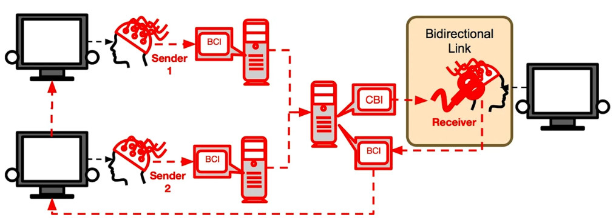
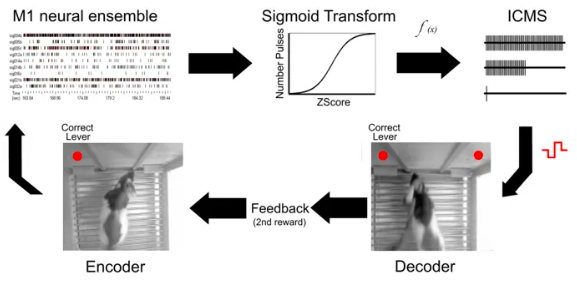

Present Technology

Jiang, L., Stocco, A., Losey, D. M., Abernethy, J. A., Prat, C. S., & Rao, R. P. N. (2019). BrainNet: A Multi-Person Brain-to-Brain Interface for Direct Collaboration Between Brains. Scientific Reports, 9(1). doi: 10.1038/s41598-019-41895-7
Pais-Vieira, M., Lebedev, M., Kunicki, C., Wang, J., & Nicolelis, M. A. L. (2013). A Brain-to-Brain Interface for Real-Time Sharing of Sensorimotor Information. Scientific Reports, 3(1). doi: 10.1038/srep01319
Currently, scientists are able to play simple games such as tetris and send yes or no signals as information between two brains (Jiang et al., 2019). The signals are transmitted using Transcranial Magnetic Stimulation, which causes an action potential using a magnetic field (Hallett, 2000). The signals on the receiver brain can interpret the signals as phosphenes, or hallucinations of light, to determine what to in the game (Jiang et al., 2019).
In addition, researchers at Duke University have been able to make rats communicate wirelessly in isolated locations in order to perform simple tasks such as pulling a the right lever to get water as a reward (Pais-Vieira et al., 2013). The information of what one rat learned would be based on trial and error would be transmitted to a second rat, which could use the given information to make the correct decision (Pais-Vieira et al., 2013). According to Pais-Vieira et al. (2013), the rat receiving the information had around a “78.877%” success rate in making the correct response based on information that came from the first rat and had better performance than if the rats were doing the activity independently.